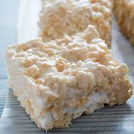

Description
Directions to make classic rice krispie treats
Ingredients
- 3 tablespoons of butter
- 1 package JET-PUFFED marshmallows
- 6 cups Kellog's Rice Kripie treats
Steps
- Melt butter in large saucepan over low heat, adding marshmallows until completely melted
- Add KELLOG'S RICE KRISPIE cereal until coated
- Using butterd spatula or wax paper evenly press mixture in 13 by 9 by 2 inch pan coated with cooking spray. cool. cut in 2 inch squares